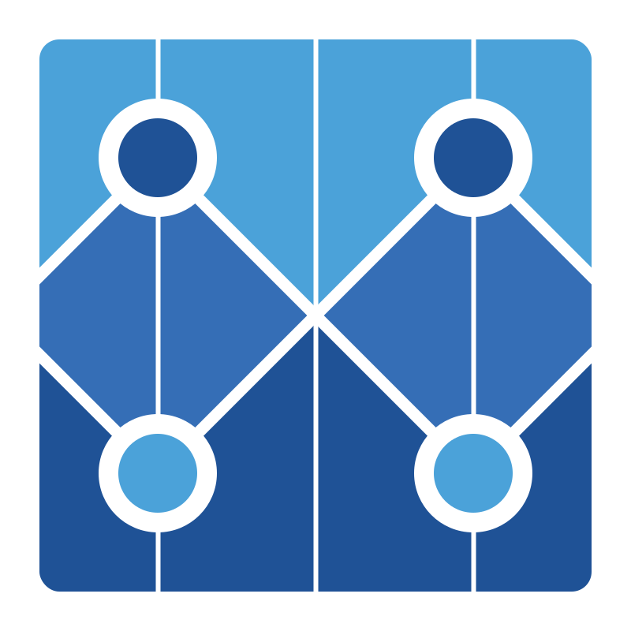

Projects
Provides tools to quickly design, build, and ship coherent experiences across all of Stack Overflow.
LESS

Bosun
Quick Start
An open-source, MIT licensed, monitoring and alerting system by Stack Exchange.
Go
An open source tool for running arbitrary queries against a SQL Server data source from the web.
This powers https://data.stackexchange.com/ and allow users to query Stack Exchange data.
.NET
DNSControl is an opinionated platform for seamlessly managing your DNS configuration across any number of DNS hosts, both in the cloud or in your own infrastructure.
Go
Safely encrypt and store secrets in Git/Mercurial/Subversion.
BlackBox allows using secrets in configuration managers or anywhere else securely.
Shell
Libraries
A high performance Micro-ORM supporting SQL Server, MySQL, SQLite, SqlCE, Firebird, etc.
.NET
A simple but effective mini-profiler for .NET, Ruby, Go, and Node.
Roslyn-based csc.exe and aspnet_compiler.exe replacement with metaprogramming hooks for ASP.NET MVC projects from the pre-DNX era.
.NET
A .NET client to send metrics to a variety of metrics backends (e.g. Bosun and SignalFX). This is the successor to BosunReporter.
.NET
Home of StackExchange.Utils.Http, our helpers to cleanly make asynchronous HTTP calls in a configurable and request/response format-agnostic way.
.NET
Deprecated
An OpenID provider implemented for the Stack Exchange network, built on top of dotNetOpenAuth.
.NET
The Markdown editor and converter used on Stack Overflow and the other Stack Exchange sites.
.NET
The Markdown editor and converter used on Stack Overflow and the other Stack Exchange sites.
.NET